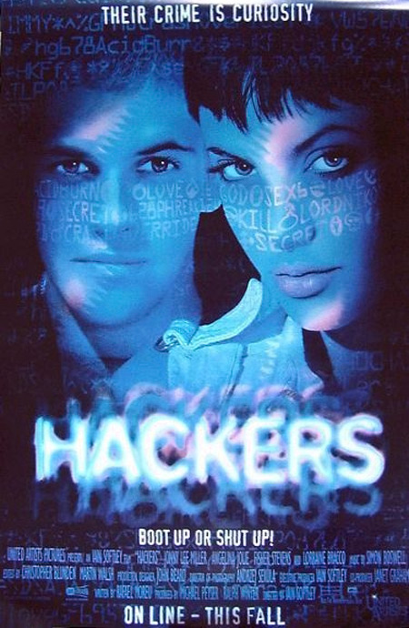
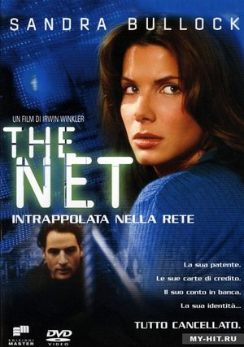
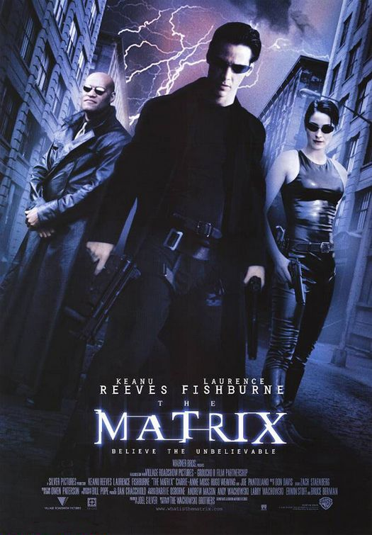
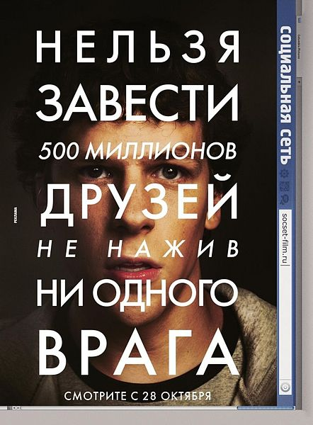
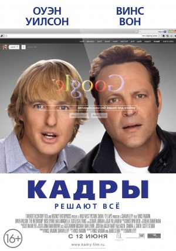

Наша реальность уже немыслима без IT и их главных строителей — программистов. Только ворочают они не кирпичами, а клацают клавишами, возводя стены заковыристого кода. Сегодня мы собрали несколько фильмов и сериалов о тех, на чьих плечах лежит громада цифрового мира.





Данная выборка является авторской и не претендует на экспертность. На самом деле фильмы о мире ИТ можно разделить по нескольким категориям. В каждой найдется много фильмов в разных жанрах: комедии, боевики, хорроры, блокбастеры, мелодраммы и драмы.
Фильмы про социальные сети
- Chatroom (Великобритания, 2010)
- Социальная сеть (США, 2010)
- Пульс (США, 2006)
- Нерв (США, 2016)
- Сфера (ОАЕ, 2017)
- Социальное самоубийство (Великобритания, 2015)
- Ингрид едет на запад (США, 2016)
- Убить за лайк (США, 2017)
Фильмы про хакеров
- Кто я (Германия, 2014)
- Пароль "Рыба-меч" (США. 2001)
- Девушка с татуировкой дракона (США, Швеция, Норвегия, 2011)
- Хакеры (США, 1995)
- Матрица (США, 1999)
- Чужими глазами (Франция, 2012)
- Анон (Германия, США, 2017)
Фильмы о програмистах и коде
- Игра в имитацию (США, 2014)
- Пираты Кремниевой долины (США, 1999)
- Стив Джобс (США, 2015)
- Исходный код (США, 2011)
- Социальная дилемма (2020)
- Превосходство (2014)
- Трон (1982)